- 00 开篇词 为什么中间件对分布式架构体系来说这么重要？.md
- 01 中间件生态（上）：有哪些类型的中间件？.md
- 02 中间件生态（下）：同类型的中间件如何进行选型？.md
- 03 数组与链表：存储设计的基石有哪些？.md
- 04 红黑树：图解红黑树的构造过程与应用场景.md
- 05 多线程：多线程编程有哪些常见的设计模式？.md
- 06 锁：如何理解锁的同步阻塞队列与条件队列？.md
- 07 NIO：手撸一个简易的主从多Reactor线程模型.md
- 08 Netty：如何优雅地处理网络读写，制定网络通信协议？.md
- 08 加餐 中间件底层的通用设计理念.md
- 09 技术选型：如何选择微服务框架和注册中心？.md
- 10 设计原理：Dubbo核心设计原理剖析.md
- 11 案例：如何基于Dubbo进行网关设计？.md
- 12 案例：如何实现蓝绿发布？.md
- 13 技术选型：如何根据应用场景选择合适的消息中间件？.md
- 14 性能之道：RocketMQ与Kafka高性能设计对比.md
- 15 案例：消息中间件如何实现蓝绿？.md
- 16 案例：如何提升RocketMQ顺序消费性能？.md
- 17 运维：如何运维日均亿级的消息集群？.md
- 18 案例：如何排查RocketMQ消息发送超时故障？.md
- 19 案例：如何排查RocketMQ消息消费积压问题？.md
- 20 技术选型：分布式定时调度框架的功能和未来.md
- 21 设计理念：如何基于ZooKeeper设计准实时架构？.md
- 22 案例：使用分布式调度框架该考虑哪些问题？.md
- 23 案例：如何在生产环境进行全链路压测？.md
- 大咖助阵 高楼：我们应该如何学习中间件？.md
- 用户故事 学而时习之，不亦乐乎.md
- 用户故事 愿做技术的追梦人.md
- 用户故事 浪费时间也是为了珍惜时间.md
- 结束语 坚持不懈，越努力越幸运.md
08 加餐 中间件底层的通用设计理念
你好，我是丁威。
我们都知道，开发中间件的技术含量是比较高的，如果能参加中间件的开发，可以说是朝“技术大神”迈了一大步。
但是，中间件开发并不是遥不可及的。通过对各主流中间件的研究，我发现了中间件底层的一些通用设计理念，它们分别是数据结构、多线程编程 (并发编程)、网络编程 (NIO、Netty)、内存管理、文件编程和相关领域的知识。
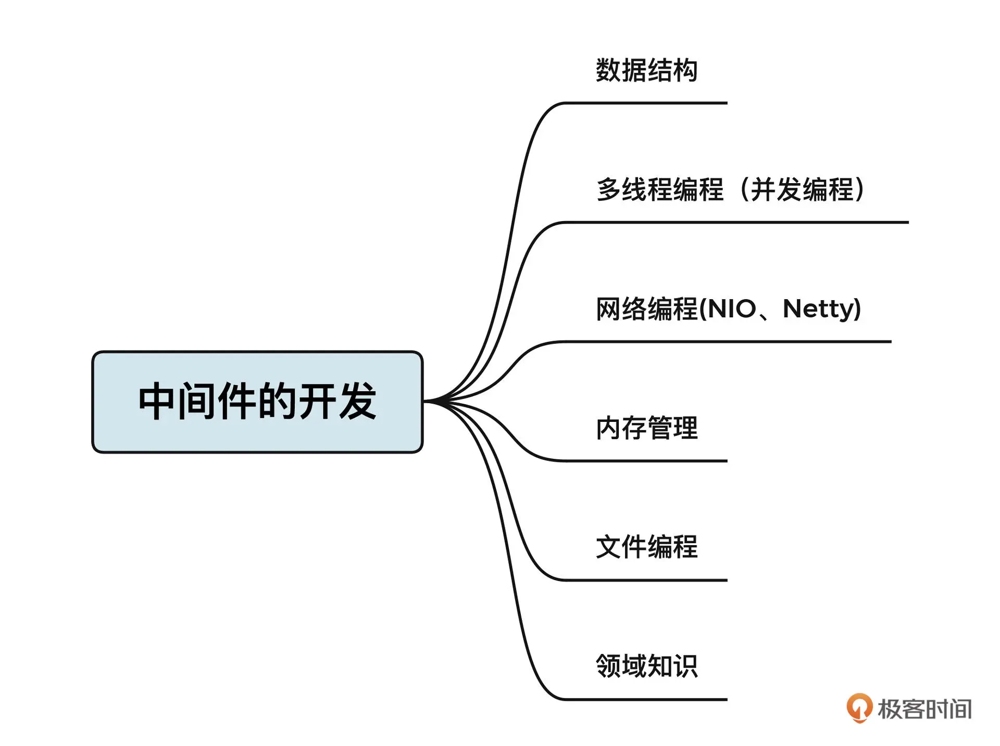
其中，数据结构、多线程编程和网络编程是中间件的必备基础，在前面的课程中，我也做了详细介绍。这节课，我会重点介绍内存管理和文件编程相关的知识，带你了解开发中间件的核心要点。
你可能会问，六大技能，那最后一个技能是什么呢？最后这个技能就是相关领域的知识，它和中间件的类型有很大关系，和你需要解决的问题密切相连。
举个例子，数据库中间件的出现就是为了解决分库分表、读写分离等与数据库相关的问题。那如果要开发一款数据库中间件，你就必须对数据库有一个较为深入且体系化的理解。想要开发出一款 MyCat 这样基于代理模式的数据库，就必须了解 MySQL 的通信协议。我们甚至可以将相关领域的知识类比为我们要开发的业务系统的功能需求，这个是非常重要的。不过这部分我没有办法展开细讲，需要你自己去慢慢积累。我们还是说回内存管理。
内存管理
Java 并不像 C 语言或者其他语言一样需要自己管理内存，因为 JVM 内置了内存管理机制（垃圾回收机制），所以在编写业务代码的过程中，我们只需要创建对象，而不需要关注对象在什么时候被回收。
垃圾回收机制（GC）对于业务开发来说无疑是非常方便的，但对于中间件开发来说就有点力不从心了。因为垃圾回收器执行回收时会出现停顿现象 (Stop-World)，不同垃圾回收器只是停顿的时间长短不同。不可控的垃圾回收对中间件的性能、可用性带来了比较大的影响。为了应对这一问题，通常的做法是，从操作系统申请一块内存，由中间件本身来管理这块内存的使用。
我们用 Netty 的内存管理机制来进一步说明一下。之前在讲解 NIO 读事件处理流程时我们说，IO 线程需要将网卡中读取到的字节存储到累积缓存区。这里就要注意了，累积缓存区是需要使用内存的。我们用一张图来说明内存管理的一些需求：
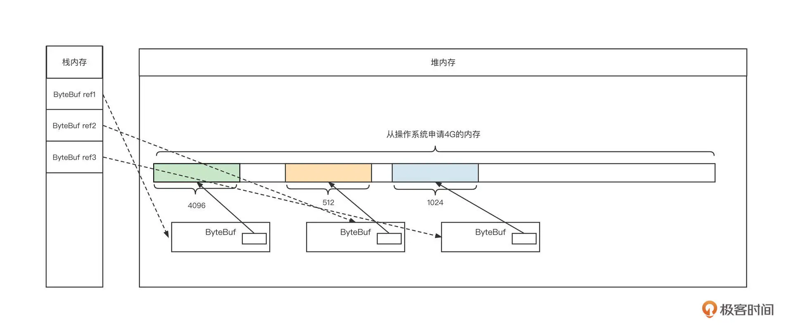
在这张图中，我们从 JVM 内存模型视角创建了 3 个累积缓存区，然后，我们需要在栈内存创建 3 个指针，并分别在堆空间中创建 3 个 ByteBuf 对象。每个 ByteBuf 对象内部都有一块连续内存，用于存储从网卡中接收到的内容。
那 Netty 框架会接管哪部分内存呢？
我们来简单思考一下，如果 Netty 直接使用 Java 的垃圾回收机制，那 ByteBuf 对象还有内部持有的内存 (byte[]) 就会频繁地创建与销毁，而且这些对象都是朝生暮死的，这会导致频繁的 GC，高性能、高并发基本就成为奢望了。
为了有效降低垃圾回收发生的频率，减少需要回收的对象，Netty 采用了下面两个解决手段。
首先，Netty 会单独管理 ByteBuf 内部持有的内存，在启动进程时就向操作系统申请指定大小的内存。这样，这部分内存会被独占，并且在 JVM 存活期间一直可达。垃圾回收器不需要关注这部分内存的回收，由 Netty 负责管理内存的释放和分配。
其次，对 ByteBuf 对象本身采用对象池技术，避免频繁创建与销毁 ByteBuf 对象本身。
提到内存管理，你不妨回忆一下自己最开始接触到的操作系统是什么样子。 目前流行的操作系统的内存管理基本都是段页式思想，笼统地说就是系统会对内存进行分段管理，每一段又包含多个页。
我们这节课主要通过学习 Netty 的内存管理机制来学习内存编程的通用设计理念。
在 Netty 中，内存的管理采取区 (Area)- 块 (chunk)- 页 (page) 的管理方式。每个区包含一定数量的块，而块又由多个页构成。Netty 的内存结构如下图所示：
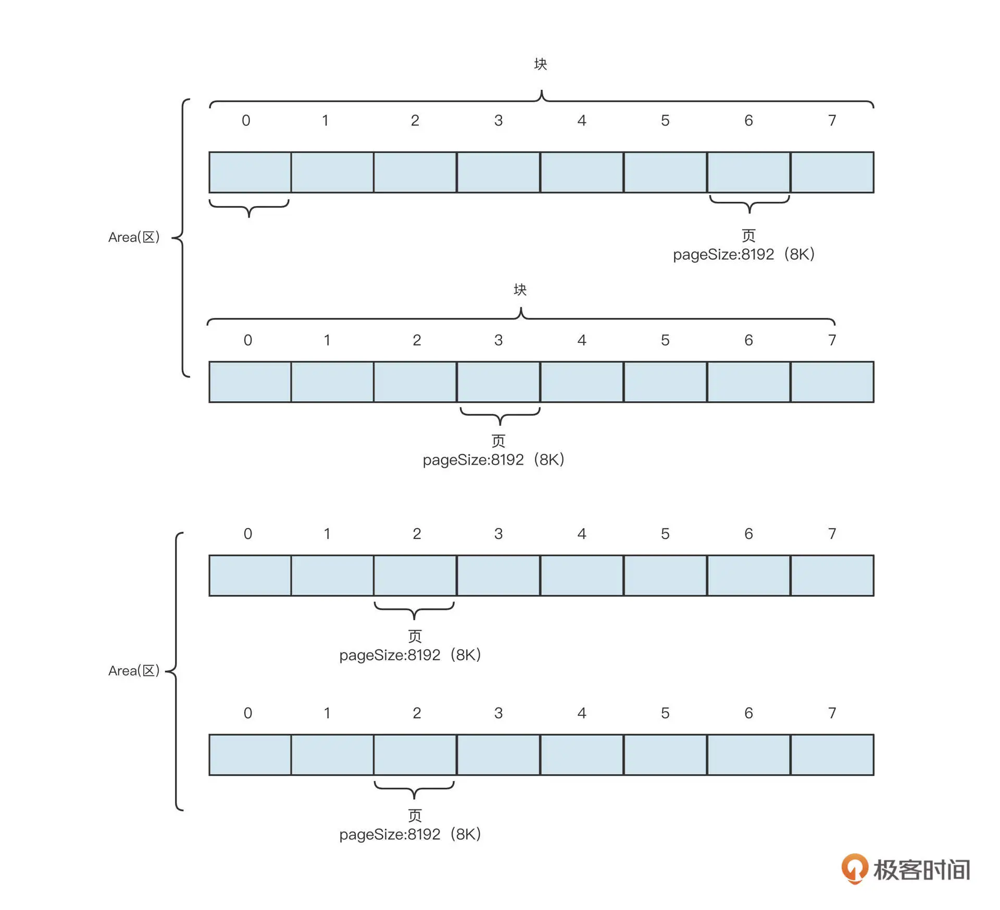
之所以划分成区、块，主要是为了提高系统的并发能力。这里简单解释一下，因为内存是所有线程共享的，线程从块中申请内存或释放内存时必须加锁。否则容易导致一个块的内存同时分配给多个线程，造成数据错乱，程序异常。
**也就是说，恰当地管理块中的内存是内存管理的重中之重。**在上面这张示意图中，一个块包含了 8 页，那怎么对这些页进行管理，怎么表示这些页是已分配还是未分配，怎么根据分配情况快速找到合适的连续内存呢？
Netty 的解决之道是将这些页映射到一颗完全二叉树上。它的映射方式大致是下图的样子。
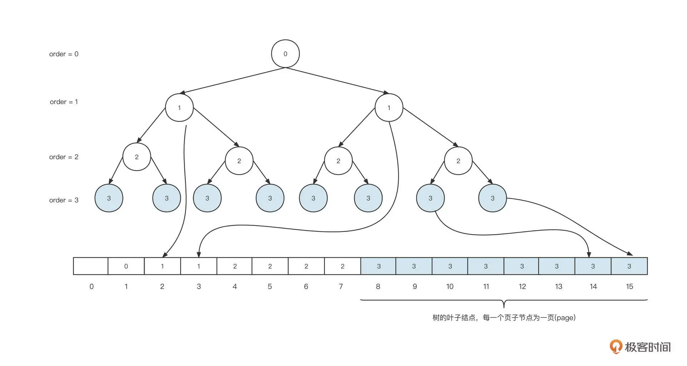
在这里，一个块的内存是 8 页，也就是 2 的 3 次幂，我们把 3 称作 maxOrder，maxOrder 的值越大，一个块中包含的页就越多，管理的内存就越多。
Netty 为了能够高效管理 maxOrder 的页，会将其映射到一颗完全二叉树上，每一个叶子节点代表一页，二叉树最后会完全存储在数组中。
具体的映射方法是：创建一个数组，长度为叶子节点的 2 倍，然后将完成二叉树按照每一层从左到右的顺序依次存储在数组中。注意，第一个节点要空出来，这样做的好处是根据数组下标能很方便地计算出父节点和两个子节点的下标。
具体的计算方法是：
-
如果节点的下标为 n，则父节点的下标 n>>1，即 n/2。
-
如果父节点的下标为 n，则其左节点下标 n << 1，即 2n，右节点下标 n << 1 + 1，即 2n+1。
完全二叉树映射到数组中，每一个元素存储的内容为该节点在二叉树中的深度，也就是上图中的 order 信息。为了统一深度的定义，我们默认根节点的深度为 0(order=0)。也就是说，根节点存储在 array[1] = 0 中，根节点的两个子节点分别存在 array[2]和 array[3]中，并且它们的值都为 1，其他节点以此类推。
这种存储方式能够清晰地让我们看到这个节点能一次分配的最大内存。如果一个节点在数组中存储的值为 n，那么从该节点出发，能找到的叶子节点的个数为 2 的 (maxOrder-n) 的幂，而每一个叶子节点表示一页，所以能分配到的最大内存是 2 的 (maxOrder-n) 的幂 * 每页大小（pageSize）。
基于这个存储结构，Netty 就可以方便地进行内存分配了。我们来看下具体的步骤。
首先，我们需要申请 8K 的内容，从根节点出发，找到第一个可分配的节点，整个查找过程如下图。
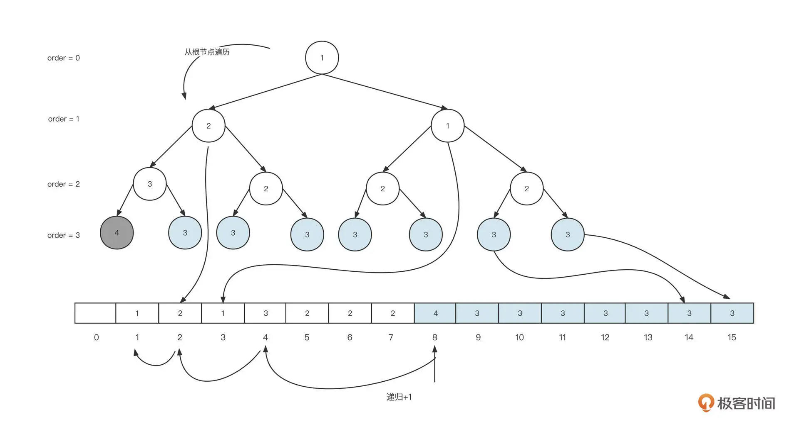
从根节点开始，优先遍历左子树，然后再遍历右子树，找到满足当前分配需求的最小节点，即从根节点，一直可以遍历到左边第一个叶子节点，将对应数组中的值 array[8] 更新为 array[8] + 1 。在上面这个例子中，这个值从 3 变为了 4。一旦存储的值大于 maxOrder，表示该节点已被占用，无法继续分配内存。
与此同时，我们还要从当前节点向上遍历二叉树，依次通过 n >> 1 找到当前节点的父节点的下标， 将 array[4]、array[2]、array[1]中存储的值依次加一。
这样，我们就完成了一次内存申请，在此基础上，如果我们需要再申请 16K 也就是 2 页的内存大小。查找过程如下图所示：
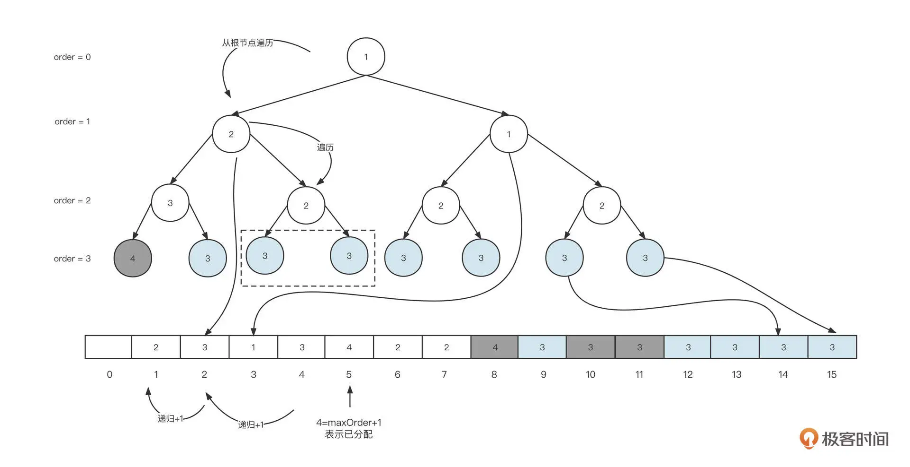
这里，我们还是从根节点开始遍历，当遍历到第一个左节点时，其存储的值为 2，并且它的左节点存储 3，右节点为 2，因为这一次我们需要申请 2 页内存，左节点存储的值为 3，能分配到的内存为 2 的 (maxOrder[3]-order[3])，最终得出为 1，即左节点只能分配 1 页的大小，故最终会定位它到右节点。从而将其右节点设置为 (maxOrder+1)，表示已分配，然后依次遍历父节点，其值加 1。如果想要申请更多内存的话，重复上述步骤即可。
从这里也可以看出，内存的申请流程，基本都是从根节点开始遍历，先遍历左子树、然后遍历右子树，找到第一个大于指定内存最小内存的节点，把它设置为已分配，然后依次找到父节点并将相应在数组中的值减 1。
内存的释放和内存的申请刚好相反。我们要从释放节点向上遍历，给数组中存储的值减 1，因为这部分内容比较简单，这里我们就不展开讨论了。
文件编程
介绍完内存管理，我们再来看看如何基于文件进行高效编程。
之所以要讲文件编程，是因为文件可以比内存提供更加廉价、更大容量的存储。而且内存存储的时效性比较短，电脑关机后数据就会丢失。不过，虽然我说了文件存储这么多优点，但我还是得客观一点，毕竟它还是有缺点的。比方说，在性能上文件存储就远低于内存。
我们来看看怎么基于文件存储写出高性能的程序。
首先，**我们需要为存储的内容设计存储协议。**以消息中间件为例，RokcetMQ 中消息的存储格式如下图所示：
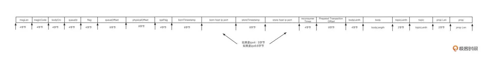
从这张图里，我们可以看到文件存储设计的三个要点，也就是长度字段、魔数和 CRC 校验码。
- 长度字段
指的是存储一条消息的长度。这个字段通常使用一个定长字段来存储。比方说，一个字段有 4 个字节，那一条消息的最大长度为 2 的 32 次幂。有了长度字段，就能标识一条消息总共包含多少个字节，用 len 表示，然后我们在查找消息时只需要从消息的开始位置连续读取 len 个字节就可以提取一条完整独立的消息。
- 魔数
魔数不是强制的设计，设计它的目的是希望能够快速判断我们是否需要这些文件，通常情况下，魔数会取一个不太常用的值。
- CRC 校验码
它是一种循环冗余校验码，用于校验数据的正确性。消息存储到磁盘之前，对消息的主体内容计算 CRC，然后存储到文件中。当从磁盘读取一条消息时，可以再次对读取的内容计算一次 CRC，如果两次计算的结果不一样，说明数据已被破坏。
学到这里我猜你已经发现了，这个文件存储协议的设计理念和网络编程领域的通信协议设计有着异曲同工之妙。对头，这个文件存储协议的设计基本也遵循 Header+Body 的结构，并且 Header 长度固定，并且包含长度字段。
不过，文件存储协议和通信协议有一个非常关键的区别，那就是：文件存储协议必须设计校验和字段，但通信协议不需要。数据存储在这是因为磁盘文件中，数据并不可靠，发生错误的概率比较大。而网络通讯协议在网络传输底层有相应的应对机制，能够及时发现错误并重发，从而确保数据传输的正确性。
好了，说回文件存储。解决了存储格式的问题，接下来就要考虑怎么从文件中检索消息了。
就像关系型数据库会为每一条数据引入一个 ID 字段一样，基于文件编程的模型也会为每条数据引入一个身份标志：起始偏移量，也就是数据存储在文件的起始位置。
起始偏移量的设计如下图所示：
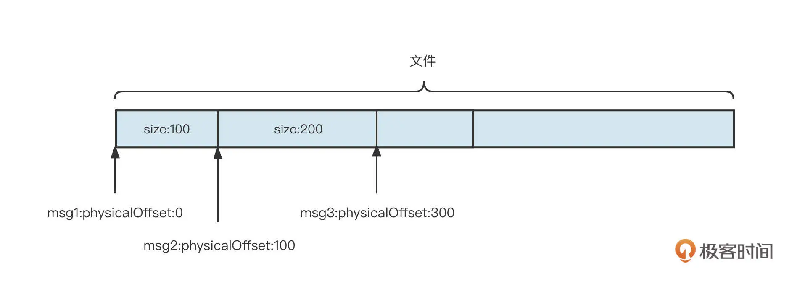
通过起始偏移量 + SIZE，要从文件中提取一条完整的消息就轻而易举了。
我们在查询数据时，往往需要从多维度展开。以数据库查询为例，一个 order 表包含主键 ID、订单编号、创建时间等字段，我们不仅可以通过主键 ID 进行查询，还可以通过订单编号进行检索。
但是，如果订单表中的数据不断增加，根据订单编号查询订单数据变得越来越慢，这个时候我们该怎么优化呢？
答案是，为订单编号建立索引。
所谓的索引，就是将需要检索的内容 (订单编号) 与主键 ID 进行关联，在检索时，我们是先找到主键 ID，然后根据主键 ID 就能快速定位到内容，从而提升性能了。它的原理你可以参考一下下面这张图片。
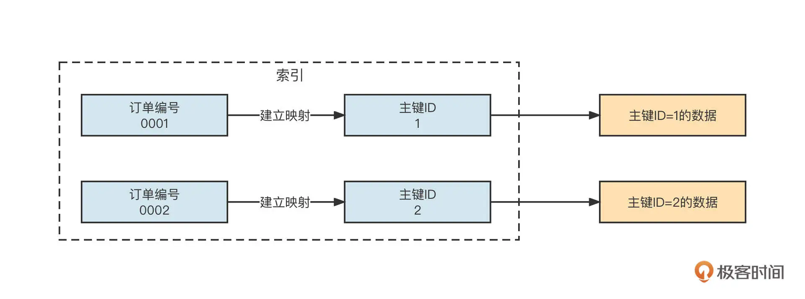
数据库作为一个基于文件编程的系统，就可以通过建立索引来提升检索性能。但由于是用 C 语言编程的，深入探讨比较困难。这时候，RocketMQ 的存储就给我们演示了索引的设计方法。
在 RocketMQ 中，所有的原始消息会按照它们到达 RocketMQ 服务器的顺序存储到 Commitlog 文件中，但消息消费时需要根据主题进行消费。也就是说，我们需要按照主题查找消息。上面我们也说过了，包括 RocketMQ 在内，基于文件的编程模型只有根据起始偏移量才能快速找到消息，为了提升根据主题检索消息的效率，需要为主题建立索引。
RocketMQ 具体的做法是，为每一个主题、队列创建不同的文件夹，例如 /topic/queue。然后，在该文件夹下再创建多个索引文件，每一个索引文件中存储数据的格式为：8 字节的起始偏移量、4 字节的数据长度、8 字节的 tag 哈希值。如下图所示：
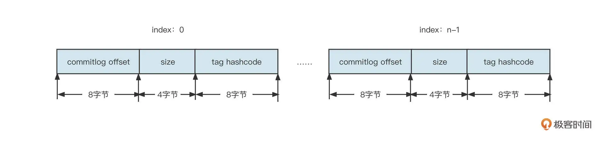
结合 RocketMQ 索引文件的构建规则，我们可以得出下面两个设计索引的关键点。
-
为了通过索引项快速查询到数据，索引项中包含了起始偏移量，并且为了支持快速根据 tag 进行过滤，索引项中也包含了 tag 的信息。
-
为了保证索引项的检索效率，索引项本身的查找机制必须非常高效。RocketMQ 是根据主题、队列、消费进度三者快速找到消息的，所以索引项的设计借鉴了数组思想，将主题索引项设计为固定长度。
索引机制解决了文件层面的检索问题，但索引最后也是存储在文件中，索引自身的性能是没法提升的。为了提升访问文件的性能，我们还会使用另外一种优化手段：内存映射机制。
什么是内存映射机制呢？一言以蔽之，就是将文件直接映射到内存中，将直接操作文件的方式用操作内存的方式进行替换，从而提升性能。
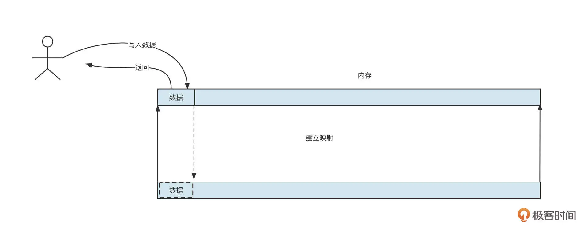
在写入数据时，我们不是直接调用文件 API，而是将数据先写入到内存，然后再根据不同的策略，将数据从内存中再刷写到文件。
在 Java 中，我们可以通过下面这段代码启动内存映射机制：
FileChannel fileChannel = new RandomAccessFile(this.file, "rw").getChannel();
MappedByteBuffer mappedByteBuffer = this.fileChannel.map(MapMode.READ_WRITE, 0, fileSize);
在 Linux 操作系统中，MappedByteBuffer 基本可以看成是页缓存（PageCache）。Linux 操作系统的内存使用策略是，最大可能地利用机器的物理内存并常驻在内存中，这就是所谓的页缓存。
只有当操作系统的内存不够时，我们才会采用缓存置换算法。例如，LRU 会将不常用的页缓存回收，也就是说操作系统会自动管理这部分内存，无须使用者关心。如果从页缓存查询数据时未命中，会产生缺页中断，这时候操作系统自动将文件中的内容加载到页缓存。
将文件映射到内存中，数据写入时只是先将数据存储到内存，但这部分数据还没有真正写入到磁盘，需要采取一定的策略将内存中的数据同步刷写到磁盘中。我们知道，机器重启后会造成数据丢失，在平衡性能和数据可靠性时，通常会衍生出下面两种不同的策略。
-
同步刷盘。数据写入到内存后，需要立即将内存数据写入到磁盘，然后才向客户端返回“写入成功”。这会牺牲性能，但可以保证数据不丢失。
-
异步刷盘。数据写入到内存后，会立即向客户端返回“写入成功”，然后异步将内存中的数据刷写到磁盘。
“刷盘”这个名词是不是听起来很高大上，其实它并不是一个什么神秘高深的词语。所谓刷盘，就是将内存中的数据同步到磁盘，在代码层面其实是调用了 FileChannel 或 MappedBytebuffer 的 force 方法。
RocketMQ 中实现 MappedFile 的刷盘的代码如下：
public int flush(final int flushLeastPages) {
if (this.isAbleToFlush(flushLeastPages)) {
if (this.hold()) {
int value = getReadPosition();
try {
//We only append data to fileChannel or mappedByteBuffer, never both.
if (writeBuffer != null || this.fileChannel.position() != 0) {
this.fileChannel.force(false);
} else {
this.mappedByteBuffer.force();
}
} catch (Throwable e) {
log.error("Error occurred when force data to disk.", e);
}
this.flushedPosition.set(value);
this.release();
} else {
log.warn("in flush, hold failed, flush offset = " + this.flushedPosition.get());
this.flushedPosition.set(getReadPosition());
}
}
return this.getFlushedPosition();
}
总之，无论是同步刷盘还是异步刷盘，最终都是调用文件存储设备的写入 API。目前，文件的存储媒介还是以机械硬盘为主，机械硬盘在写入数据之前，需要先进行磁道寻址，如果写入磁盘的数据位置比较随机，那么寻址需要花费的时间也会相应增多，所以业界又引入了一种设计思想：文件顺序写机制。
文件顺序写的设计理念应用非常广泛，数据库领域的 redo 日志的底层就运用了顺序写机制。你可以先通过这张图理解一下它的运作机制。
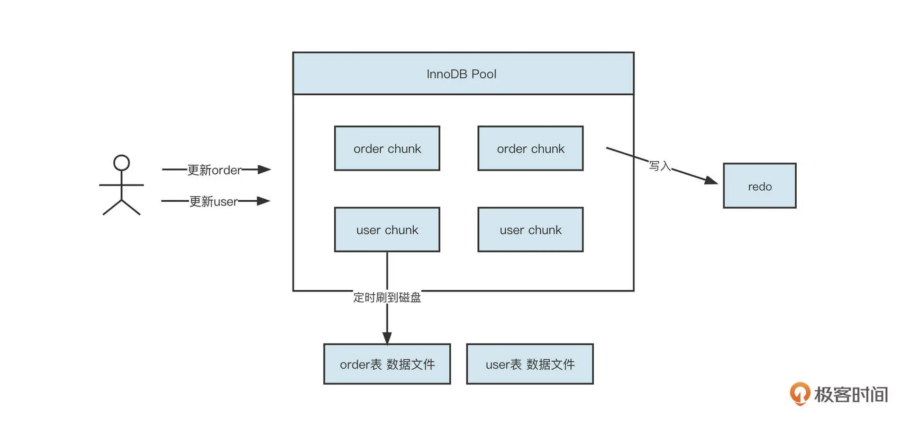
一个数据库中有很多表，每一张表都存储了很多数据，这些数据分布在磁盘不同的区域，而且用户在更新数据时也很分散。例如他们会时而更新订单表，时而更新用户表，那该怎么优化呢？
我们以 MySQL 为例。MySQL 中的 InnoDB 引擎是首先维护一个内存池，同样使用内存映射机制将磁盘中的文件映射到内存，用户的更新操作会首先更新内存。但我们知道，对于关系数据库来说，数据不丢失是一个硬性需求，但如果为了确保这一点采用同步刷盘将数据写入到磁盘，又必然是一个随机写的过程，无法满足性能要求。
为此，InnoDB 引入了一个 redo 文件。这样，数据写入到内存后，会先同步刷盘到 redo 文件，但写入 redo 文件是一个不断追加的过程，也就是说先顺序写入 redo 文件，然后再异步将内存中的数据刷写到各个表中。这样，就算 MySQL 宕机等原因导致内存中的数据丢失，还是可以通过回放 redo 文件将数据恢复回来。这就在保证数据库不丢失的情况下，提升了性能。
总结
这节课就讲到这里。刚才，我们从中间件开发的视角入手，简单介绍了中间件开发工程师必须具备的基础技能。我还重点介绍了内存管理、文件管理的一些编程技巧。
内存管理主要包括内存的分配与内存的回收，我们可以通过进程管理内存，从而减少垃圾回收的发生频率，提升系统运行稳定性。
文件编程领域首先要解决的就是数据以什么格式存储在文件中，然后再通过引入索引、内存映射、同步刷盘、异步刷盘、顺序写等手段优化文件访问的性能。
希望学完这节课，你能更深入地认识一些业务开发领域平时不怎么关注，甚至看起来有点高大上的功能。当然更重要的是，以此为起点，展开对中间件更深的探索。如果你有什么其他的疑问和发现，也欢迎随时跟我沟通。
课后题
最后，给你留一道思考题吧。
有人说，在 Netty 的内存分配机制中，数组中存储的值代表该节点当前拥有的剩余内存。你觉得这句话对吗，为什么？
欢迎在留言区写下你的想法。我们下节课再见。
© 2019 - 2023 Liangliang Lee. Powered by Vert.x and hexo-theme-book.